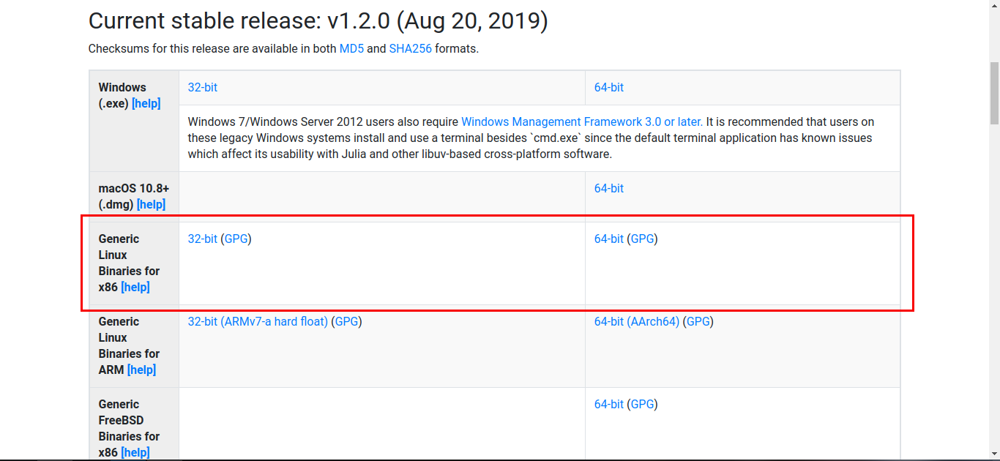
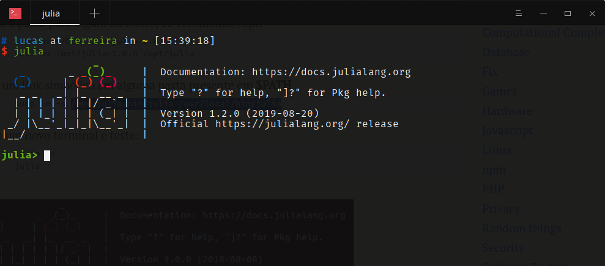

E aí, turma! Tudo bem?
Dessa vez eu venho aqui rapidamente para mostrar para vocês como instalar a linguagem Julia na sua distro Linux.
Atualmente eu estou utilizando o Manjaro na versão 18.
Algumas distribuições já trazem o pacote da linguagem nos seus repositórios, mas aqui vamos aprender a instalar usando os binários do Julia. Então vamos aos finalmentes.
1 - Baixe o pacote em https://julialang.org/downloads

2 - Depois do download, entre via terminal na pasta onde o arquivo foi salvo
cd Downloads
e exatraia o pacote:
tar -vzxf julia-1.2.0-linux-x86_64.tar.gz
3 - Em seguida, mova o diretório para alguma pasta de sua preferência. Eu prefiro a pasta /opt:
sudo mv julia-1.2.0 /opt
4 - E, por fim, crie um link simbólico da seguinte maneira:
sudo ln -s /opt/julia-1.2.0/bin/julia /usr/local/bin/julia
Depois de seguir estes passos, verifique se o interpretador do Julia já está funcionando. Caso não funcione de primeira, abra um novo terminal ou reinicie a sessão.
julia -v
julia
Após executar julia seu terminal deve ficar assim:

Simples demais, né? Espero que você se divirta aprendendo Julia e logo mais espero escrever um pouco mais sobre Julia. Abraço!